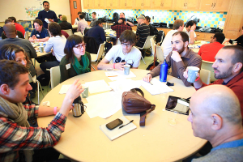

Refactor Camp is an informal annual retreat and conference, with associated meetup groups, devoted to rethinking familiar themes from novel perspectives ("refactoring").
Both the event and the meetup groups are loosely affiliated with ribbonfarm.com.
Refactor Camp is organized on a non-profit basis, and funded by attendee registration fees and individual sponsorships. The meetups and associated online groups are free.